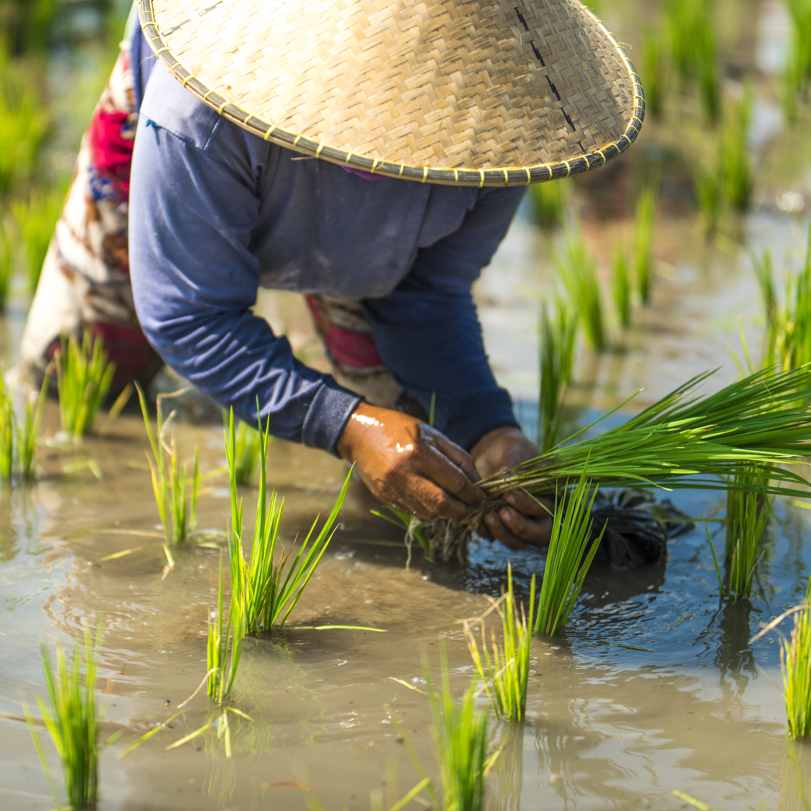
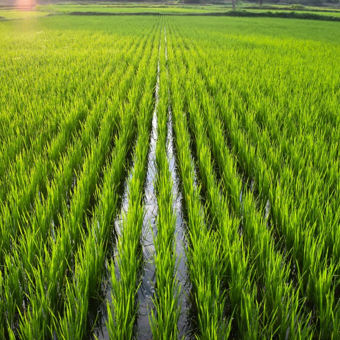
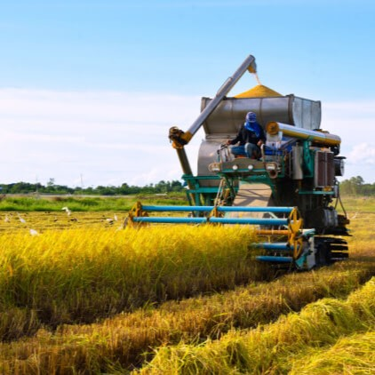
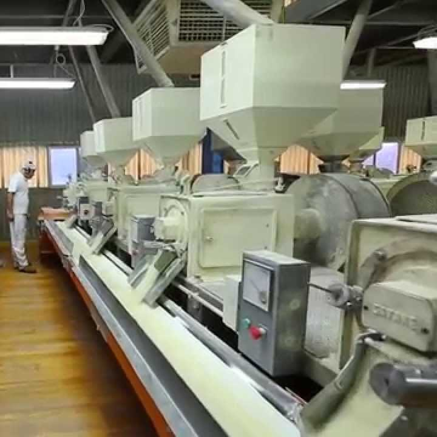
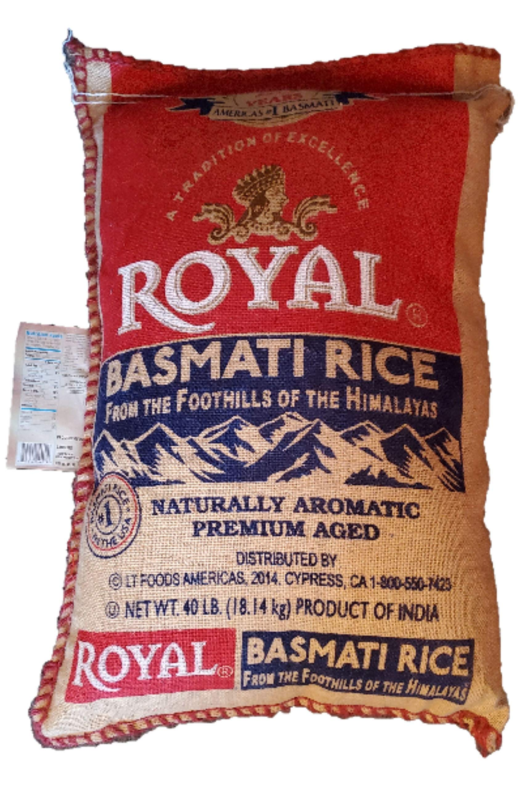
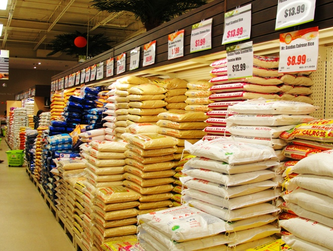

|
|||
Welcome to the heart of the harvest season, where golden fields sway in anticipation of a time-honored ritual – the gathering of rice. In this blog post, we delve into the intricate and time-tested process of how rice is harvested, uncovering the artistry and dedication woven into each step. From the careful preparation of flooded fields to the golden hues of mature rice signaling the arrival of harvest, we embark on a journey through the fields, capturing the essence of this essential staple's transformation from paddy to pantry. Join us as we explore the fascinating world of rice harvesting, where tradition meets innovation, and the culmination of hard work results in the grains that grace tables across the globe. |
|||
|  | Before the rice fields come to life with lush greenery, farmers engage in meticulous preparation. Fields undergo plowing and leveling, creating an optimal environment for rice cultivation. Rice seeds are then sown in nurseries, where they germinate before being transplanted into the flooded fields, setting the stage for a successful growing season. |  | The flooded fields become a canvas for rice cultivation, with carefully managed water levels providing the essential semi-aquatic environment. Farmers nurture the growth of rice plants, ensuring they receive the right balance of sunlight, nutrients, and water. This phase is critical as the rice plants develop and mature, anticipating the upcoming harvest. |
|  | The golden hues of mature rice plants signal the arrival of the harvesting season. Farmers employ various methods, from traditional sickle cutting to modern mechanical harvesters, to efficiently collect the mature rice. This labor-intensive but rewarding process marks the culmination of weeks of dedication to cultivating the crop. |  | Following the harvest, the rice undergoes a series of processing steps. Threshing separates the grains from the stalks and husks. Milling refines the rice, yielding brown rice initially. Further processing involves removing the bran and germ, resulting in the familiar white rice seen on dining tables worldwide. |
|  | Once processed, the rice is carefully packaged into bags or containers, ready for distribution. Attention to packaging quality ensures that the rice reaches consumers in optimal condition. Proper storage conditions are maintained to preserve the freshness and nutritional value of the rice until it reaches its final destination. |  | The final step involves bringing the rice to consumers. Packaged rice is shipped to distribution centers, local markets, or directly to consumers. Marketing strategies come into play, encompassing aspects like branding, packaging design, and aligning with market demand to promote this essential staple in diverse culinary traditions. The journey from the fields to the table is complete as rice becomes a staple in households worldwide. |
| As we bid farewell to the rice fields and the echo of harvest season, we hope this exploration into the art of rice harvesting has provided you with a deeper appreciation for this vital crop. From the meticulous cultivation in flooded fields to the golden spectacle of the harvest, each step reflects the dedication of farmers worldwide. As you savor the grains on your plate, remember the journey they undertook from the fields to your pantry. Join us in celebrating the timeless traditions and the modern innovations that make rice harvesting not just a seasonal event, but a captivating saga of agriculture's enduring legacy. Until the next harvest season beckons, may the essence of the fields linger in the stories told by each grain of rice. | |||
|
|||